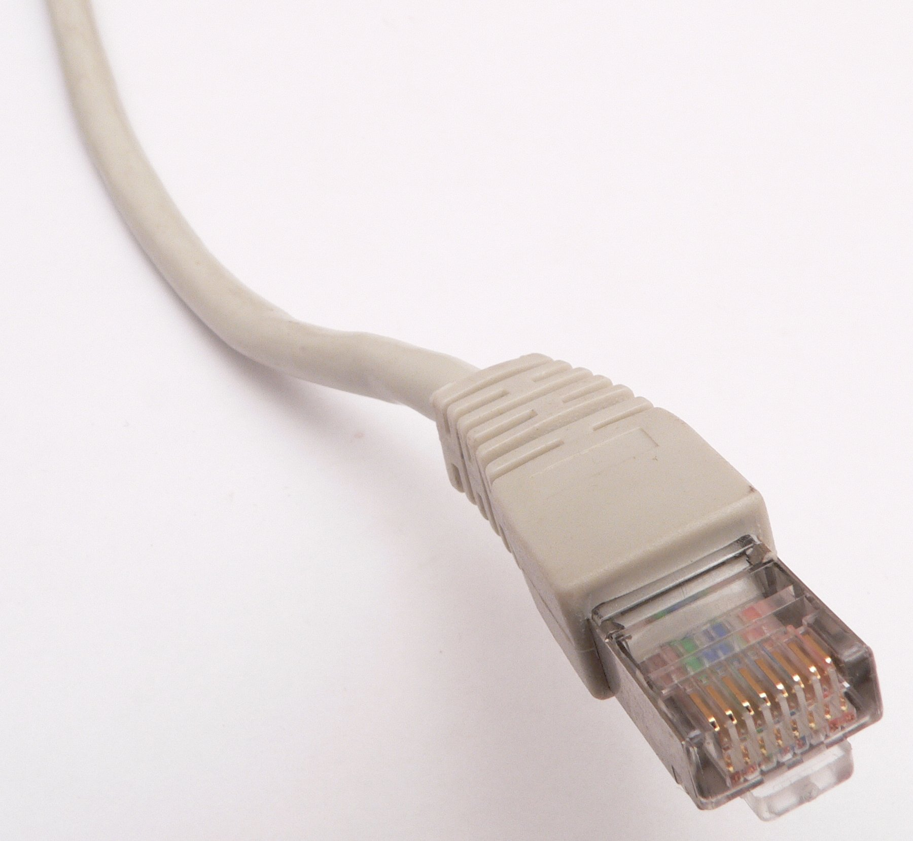
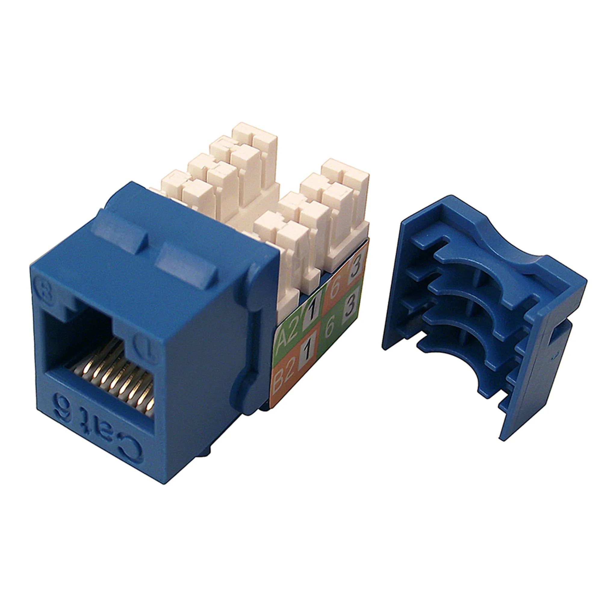
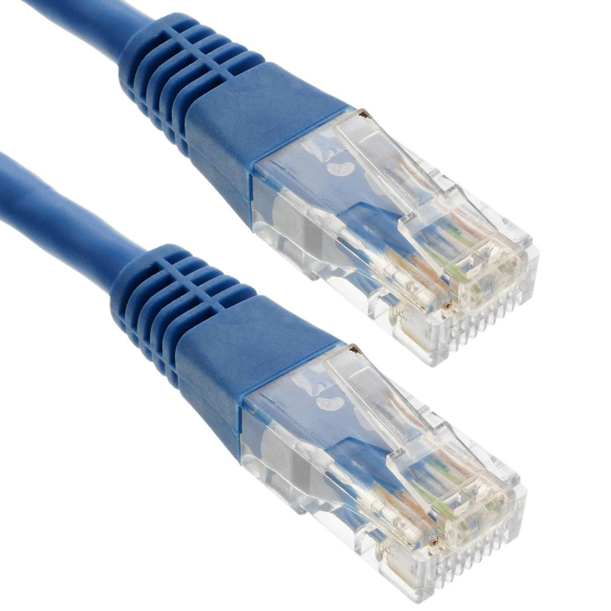
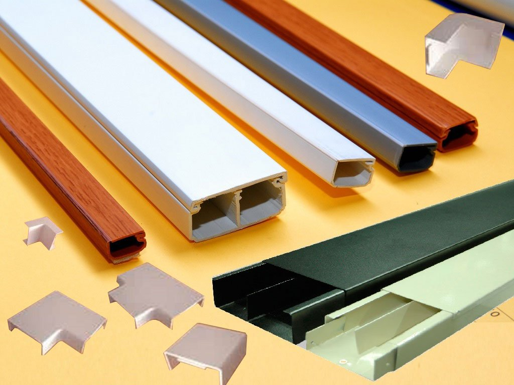
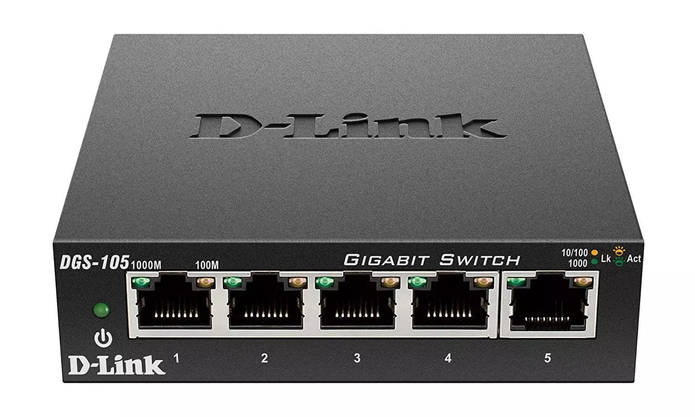
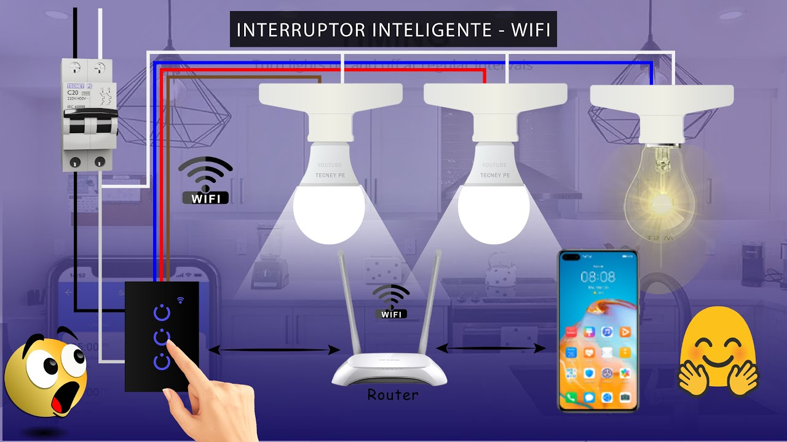
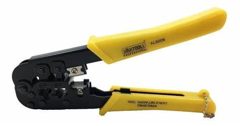
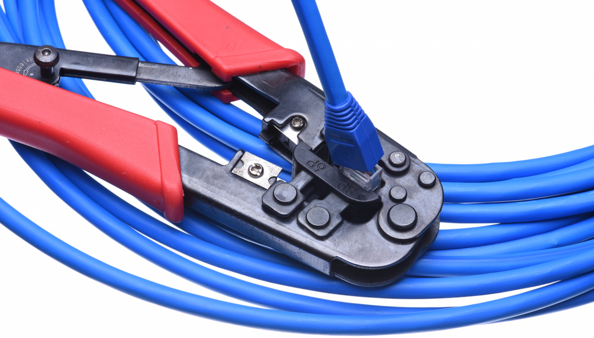
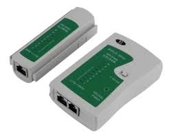
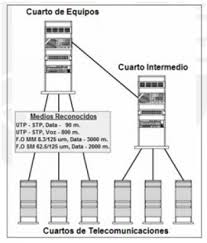

1. ¿Qué son los componentes pasivos en la Red?
Los componentes pasivos en una red son aquellos que no requieren energía eléctrica para funcionar. Estos incluyen cables, conectores, y otros dispositivos que permiten el paso de las señales sin alterarlas.
2. Descripción técnica de cada componente pasivo
RJ45
El conector RJ45 es utilizado para terminar cables UTP en redes de datos, siendo el estándar para conectores de red Ethernet.
Jacks o Keystone
El keystone es un conector modular que se utiliza en placas de pared y paneles de conexión para organizar y mantener los cables de red.
Cable UTP
El cable UTP es un tipo de cable de par trenzado utilizado para comunicaciones Ethernet y otras redes de datos.
Patch Panel

Panel de conexiones que organiza y administra los cables de red. Los cables llegan al patch panel y se conectan a otros dispositivos de red mediante cables patch.
Patch Cord

Cable corto utilizado para conectar dispositivos a un patch panel o a un conector RJ45. Facilita la conexión rápida y sencilla.
Fibra óptica

Cable que transmite datos a través de luz en lugar de electricidad. Ofrece alta velocidad y ancho de banda, y es menos susceptible a interferencias.
Canaletas
Estructuras para organizar y proteger los cables en instalaciones internas. Se utilizan para mantener el cableado ordenado y accesible.
3. ¿Qué son los componentes activos en la Red?
Los componentes activos en una red son aquellos que requieren energía eléctrica para operar. Estos dispositivos amplifican, regeneran o dirigen las señales que pasan a través de ellos.
4. Descripción técnica de cada componente activo
Switch
El switch es un dispositivo que conecta diferentes dispositivos en una red y utiliza la dirección MAC para enviar datos solo al destinatario correcto.
Router

El router es un dispositivo que dirige el tráfico de red entre diferentes redes, permitiendo la comunicación entre dispositivos en diferentes subredes.
Tarjeta de red

La tarjeta de red es un componente que permite a los dispositivos conectarse a una red, tanto mediante cableado como de forma inalámbrica.
Interruptor de Wifi
La tarjeta de red es un componente que permite a los dispositivos conectarse a una red, tanto mediante cableado como de forma inalámbrica.
Acces Point

La tarjeta de red es un componente que permite a los dispositivos conectarse a una red, tanto mediante cableado como de forma inalámbrica.
5. Descripción de herramientas
Ponchadora
Herramienta utilizada para insertar cables en conectores o paneles de parcheo. Asegura las conexiones de los cables a los conectores.
Crimpadora
Herramienta para unir conectores a los cables mediante el prensado. Se utiliza para hacer conexiones de cables UTP y coaxiales.
Desforradora
Herramienta para retirar el aislamiento exterior de los cables, exponiendo los conductores internos sin dañarlos.
Tester/Probador de cables
Dispositivo utilizado para verificar la continuidad y el correcto funcionamiento de los cables de red. Identifica problemas como cortocircuitos o conexiones incorrectas.
6. ¿Qué es el cableado horizontal?
Es la parte del cableado de red que conecta los dispositivos de red con los paneles de parcheo en el rack. Se extiende desde el panel de parcheo a las estaciones de trabajo o dispositivos.

7. ¿Qué es el cableado vertical?
Se refiere al cableado que conecta diferentes racks o armarios de telecomunicaciones en un edificio. Transporta datos entre diferentes pisos o áreas.
8. Tipos de cables para el sistema horizontal
- Cat 5e: Cable de par trenzado que soporta velocidades de hasta 1000 Mbps (1 Gbps) y es adecuado para la mayoría de las redes Ethernet.
- Cat 6: Cable de par trenzado que soporta velocidades de hasta 10 Gbps y tiene mejor aislamiento para reducir la interferencia.
- Cat 6a: Versión mejorada del Cat6 que soporta velocidades de hasta 10 Gbps a mayores distancias y con mejor blindaje.
- Cat 7: Cable de par trenzado con mayor blindaje que soporta velocidades de hasta 10 Gbps y frecuencias de hasta 600 MHz.
9. Normativa para Hacer Cables de Red (Clases A y B)
10. ¿Para qué se utiliza un cable directo en la red?
Se utiliza para conectar un dispositivo a un switch o hub. Los pines en ambos extremos del cable están en el mismo orden (1-1, 2-2, etc.).
11. ¿Para qué se utliliza un cable cruzado en la red?
Se utiliza para conectar dos dispositivos similares, como dos PCs o dos switches, directamente. Los pines en un extremo del cable están cruzados con los pines en el otro extremo (1-3, 2-6, etc.).